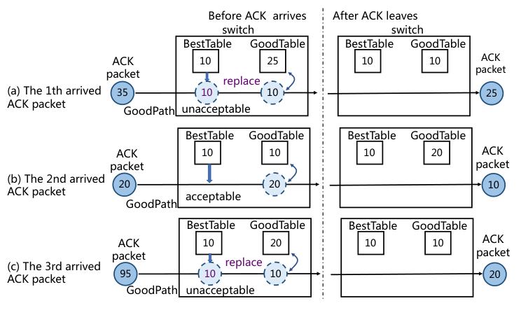
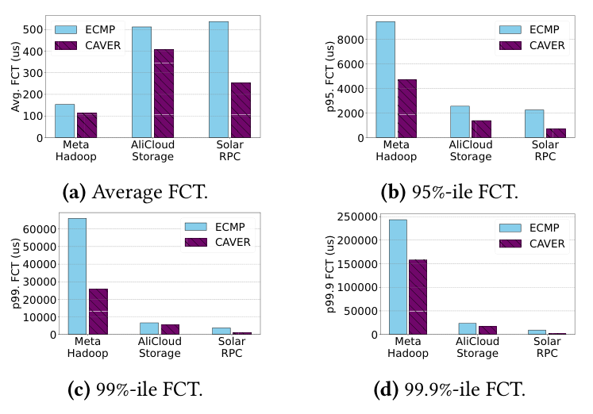

Full 16-page paper, figures and tables; author repository READMEs. No experiments executed.
CAVER：新流不要再挤向“同一条最优路径”
论文：CAVER: Enhancing RDMA Load Balancing by Hunting Less-Congested Paths。机构：清华大学（Haotian Deng、Yuan Yang、Xiao Li、Junhao Dong、Yi Liu、Mingwei Xu）与北京航空航天大学（Jue Zhang、Menghao Zhang）。正式收录：ACM SIGOPS ATC 2026，会议日期 2026-11-15—18，香港；DOI 10.1145/3828523.3857047。这是正在举办的本届会议论文，非“今日首次发表”；单独上线日期未核实。官方录用名单与论文首页交叉确认。
问题与机制：拥塞信息的覆盖面，比更快重路由更先决定上限
ECMP无法知道哈希后路径是否拥塞；只凭现有流反馈，又只能观察已经走过的路径。CAVER针对这个盲区，不维护全网所有路径，而是让不同流的ACK在交换机中交换路径知识，使一次ACK可以携带不是它自身数据流走过的路径。核心目标是把新流一开始放到较空闲路径，而非承诺把所有已拥塞长流立即迁走。
- 以瓶颈链路利用率描述路径（§3.1）：每个出口维护随发送字节增加、周期衰减的DRE计数，折算成8-bit CE；路径CE取沿途链路CE最大值。交换机按目的端维护最佳路径BestTable和一个可接受候选GoodTable。返回ACK携带最佳与候选两组“路径+CE”，每经过一跳就结合本地出口状态更新。这样跨流共享路径信息，无需额外发探测包；但“无探测包”不等于零开销。
- 可接受不等于唯一最好：候选p满足
255−CE(p) > β × (255−CE(best))。比较的是剩余容量，而不是CE直接乘β。β接近1会把很多新流逼向少数路径；β为0则几乎退化为随意选路。默认β=0.8，默认状态有效期和估计窗口均50μs，适用数值依赖论文10μs基础RTT，不能照搬跨机房。 - Give-and-Take交换，而非寄存器内维护长候选数组：ACK到达时，如果其候选或GoodTable候选已不可接受，先换成当前最佳；再交换ACK与GoodTable的候选。相继ACK因此携带不同路径，只需少量流水线状态访问，避免多次访问同一寄存器阵列导致报文recirculation。图4不是在计算一次最短路，而是在说明候选如何在ACK与交换机间轮换。
- 源ToR一次性消费候选（§3.2）：PathTable用默认4项的环形表收集新鲜候选，新流取最新尚未用过的有效项；同一项不连续分配给一批并发新流。无有效候选回退ECMP。FlowTable缓存该流路径，后续包保持同一路径；哈希冲突还需目的端校验，不能让冲突项把包转到错误目的。该设计降低同批流选同一候选的概率，但不是全网严格无冲突调度。
图4，PDF第6页，Deng等，ATC 2026。图中最佳CE保持10，GoodTable里的25/10/20却随ACK交换；不可接受的35与95先退回最佳路径。读图重点是候选多样性来自跨包交换，而非缓存很多路径。CC BY 4.0；原图裁切。


通过ACK在交换机汇合已知路径信息，Best/Good候选防止新流同时选择同一个瞬时最优出口；没有探测包不等于没有ACK和状态开销。
Haotian Deng, Jue Zhang, Menghao Zhang, Yuan Yang, Xiao Li, Junhao Dong, Yi Liu, Mingwei Xu · ACM SIGOPS ATC 2026 · PDF 第6页 · 技术评论节选
原文与上下文 ↗实验证据：仿真优于强基线，不代表真机做过同样对照
仿真（§4.1）：NS-3、256主机、k=8三层fat-tree、2:1超售、端点间16条路径，RoCEv2 RC Write，DCQCN+PFC；AliCloud Storage、Meta Hadoop、Solar RPC分布。FCT slowdown是“当前流完成时间/该流隔离运行完成时间”，不是存储操作时延或IOPS。图6的AliCloud Storage在80%负载下，相对其他方法中表现最好者，平均slowdown降低12%，尾部降低20%；比较特定ConWeave基线时正文给出的收益更高，不能混成相对最强基线的统一收益。图10在60%负载下：相对取消跨流信息共享的变体改善38.3%，相对只保存最佳路径而不保留可接受路径的变体改善18.8%，说明“看见更多路径”和“避免全选最好”都起作用。
真机（§4.3、图15）：两台Tofino1借多流水线虚拟为2个leaf+2个spine，交换机间10Gbps、主机接入25Gbps；服务器PCIe 3.0 x8限制了测试速率。开启PFC/DCQCN，负载60%。只和ECMP比较，未实现CONGA/HULA的P4版本，ConWeave又要求Tofino2特性。三种工作负载平均FCT降低11%—49%，作者报告最高尾FCT降幅86.5%。图15分别列平均、P95、P99、P99.9，不能把最高尾部收益写成所有负载P99均下降86.5%。此处没有400Gbps硬件验证，也没有直接跑分布式存储引擎。


两台Tofino1模拟四交换节点，10G网络互联、25G主机接入，60%负载。真机只对照ECMP；平均、P95、P99、P99.9不可混写为统一尾延迟收益。
Haotian Deng, Jue Zhang, Menghao Zhang, Yuan Yang, Xiao Li, Junhao Dong, Yi Liu, Mingwei Xu · ACM SIGOPS ATC 2026 · PDF 第13页 · 技术评论节选
原文与上下文 ↗图15，PDF第13页，Deng等，ATC 2026，CC BY 4.0；原图裁切。纵轴是FCT（μs），四个面板刻度不同；Meta Hadoop的极端尾部改善明显，而AliCloud Storage与Solar RPC的收益幅度不同。应比较每个工作负载内的ECMP/CAVER柱，不能跨面板用柱高比较时延。
资源、失效与部署边界
数据包增加4B路径头；ACK增加10B，对原62B ACK约16%增幅。默认仿真每个数据包一个ACK；§4.2另测稀疏ACK，论文测得特定ConnectX-6配置约52个数据包/ACK，此时仍有收益，但不能把高频ACK仿真收益无条件外推。反馈变稀疏、路径数量变多、流量冷启动都会减慢发现。
表2是按10k主机规模配置表项时测得的资源占用，不是实际部署1万主机：流级ToR SRAM16.5%、非ToR2.1%，包级各17.4%。寄存器每项最小128bit导致实际消耗高于字段相加；作者推算50k主机包级版本约25MB，超过其Tofino1的15MB。所有交换机都支持相应状态更新时才能获得完整收益，不能只改主机驱动落地。
§5讨论完整断链：ACK停止传播失效路径，候选到期删除；邻接交换机对已走该路径的包回退ECMP并更新转发头，端主机仍按原RDMA传输处理丢包。这不等于论文已穷尽验证故障恢复，也不提供存储事务的提交/持久化语义。冷启动时先回退ECMP；长期固定流路由与少量候选路径下，初始选路的优势可能减弱。包级版本仍需底层机制处理乱序，不能认为普通RC因此自动可安全逐包喷洒。
对分布式存储的可执行判断（分析推断）
适合验证于“副本写入/纠删码重建大流与小读RPC混跑、网络路径碰撞占主要瓶颈”的机架间路径，而不是CPU锁竞争或SSD服务时间主导的系统。收益应来自降低共享网络排队，不是减少存储协议轮次。若现有系统长期复用固定QP/流，必须先查新流识别粒度和路由缓存生命周期，不能用每条RDMA消息都重新选路的想象估计收益。
最小实验先复现两leaf、两spine及相同ACK策略的ECMP/CAVER，再以实际RPC尺寸分布叠加后台修复流。固定PFC/DCQCN参数，分开扫30%/60%/80%负载、ACK比例和并发扇出；同时记录流FCT、客户端读写P99/P99.9、重传、PFC暂停、链路利用率与交换机SRAM。加一条链路限速及断链，核对候选过期前后错误率与恢复时间。如果FCT改善而应用P99不动，应回查存储侧排队与持久化，而不是宣称网络方案失败或成功。需要Tofino或同等可编程交换机与运维可控的测试网，RNIC无需实现新的存储一致性协议。
阅读与复现范围：已读16页论文正文、机制/实验/讨论及图表；核查官方录用、作者PDF和作者P4/NS-3仓库README。未运行实验，未找到另行可核实的作者报告。P4说明使用BF-SDE-9.4.0；真实复现还依赖交换机SDK和设备，源码不是即装即用的软件包。
参考资料：正式录用名单 · DOI · 作者PDF · P4实现 · NS-3实现。论文首页明确CC BY 4.0，所选图未见第三方独立限制；两幅裁图据此归档，保留作者署名与来源；全文 PDF 已确认许可，上传仍待平台授权，当前未计为已备份。两个代码库页面标MIT，源码归档需保留LICENSE及第三方文件原许可。